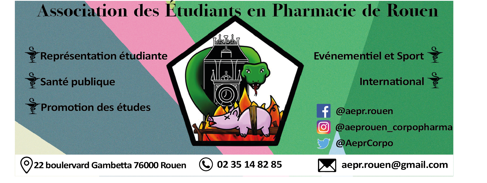

La Corpo Pharma
L’AEPR est la plus grande et la plus ancienne association de représentation des étudiants en pharmacie de Rouen. Forte d’une existence de plus d’un demi-siècle, l’AEPR se charge de réaliser de nombreuses missions pour les étudiants mais aussi pour les professionnels.
Nous assurons plusieurs missions dont l’impression et la vente des polycopiés auprès des étudiants en PACES ainsi que des étudiants en pharmacie, l’organisation d’événements sportifs, gala annuel. Nous assurons également la rédaction de notre journal étudiants (pharmazoïde).
Dans le cadre de la vie étudiante, les représentants de l’AEPR participent à la vente de différents produits comme des paniers de légumes, des pulls de promotions ce qui participe à une certaine cohésion entre les étudiants. Nous occupons aussi une place dans l’international en assurant des stages internationaux, l’acceuil d’étudiants étrangers et la communication des événements internationaux.
L’AEPR bénéficie de plusieurs partenariats nous permettant de financer nos différents projets, de connaître amplement le monde pharmaceutique et dont certains peuvent bénéficier aux étudiants. Afin d’aider les lycéens à découvrir différents métiers et à choisir leur filière nous organisons des visites dans des établissements scolaires pour leur présenter les différents métiers pharmaceutiques. Nous participons à la présentation de nos études auprès des PACES.
De plus, l’association permet de relayer les projets, les modifications, les informations concernant le déroulement des études pharmaceutiques. Dans le cadre de la Santé publique, l’AEPR élabore des projets afin de sensibiliser les étudiants tels que l’Octobre rose pour la lutte contre le cancer du sein, le sidaction, le Movember ou les dons du sang.
